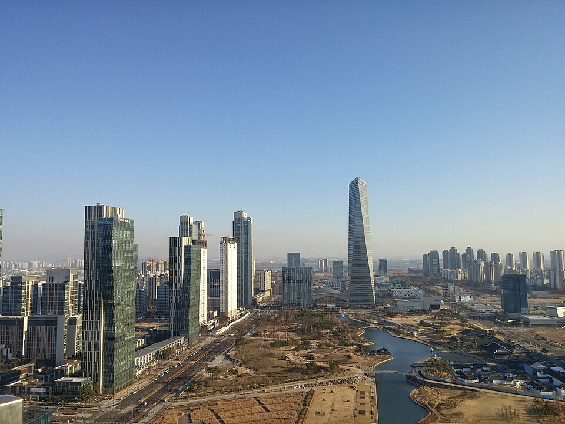

지역·대입
인천 연수구 검정고시 — 대학까지 내다보고 짜는 고졸 로드맵

연수구 검정고시를 알아보는 분 중에는 “합격만 하면 된다”가 아니라 “그다음 대학까지 가고 싶다”는 분이 많습니다. 그런데 합격만 목표로 준비했다가, 합격한 뒤에 처음부터 다시 시작하는 경우가 생깁니다. 처음부터 대입을 염두에 두면 같은 시간으로 두 가지를 같이 가져갈 수 있어요.
먼저 수시인지 정시인지 방향을 정합니다
고졸 검정고시 합격자는 고등학교 졸업자와 동등한 학력으로 대학에 지원할 수 있습니다. 크게 두 갈래예요.
- 수시 — 학교생활기록부 대신 검정고시 성적을 반영하는 전형이 있습니다. 이 길을 보신다면 검정고시 점수 자체를 높게 받아 두는 게 유리합니다.
- 정시 — 수능 점수로 갑니다. 이 길이면 검정고시는 자격을 얻는 관문이고, 진짜 승부는 수능 공부입니다.
전형 방법과 반영 기준은 대학·학과·연도마다 다릅니다. 지원할 곳이 정해지면 반드시 그 대학의 모집요강을 직접 확인하셔야 해요.
방향에 따라 목표 점수가 달라집니다
검정고시 합격 기준은 전 과목 평균 60점입니다. 하지만 수시로 대학을 보신다면 60점은 목표가 아니라 최저선이에요. 점수를 반영하는 전형에 지원할 생각이라면 평균을 여유 있게 올려 두는 편이 선택지를 넓힙니다. 반대로 정시만 볼 계획이면 검정고시에 과하게 시간을 쏟기보다 빠르게 통과하고 수능 과목으로 넘어가는 게 낫습니다.
합격과 수능을 같이 가져가는 과목 배치
- 국어·영어·수학 — 검정고시와 수능이 이어지는 과목입니다. 검정고시 범위에서 끝내지 말고 개념을 제대로 잡아 둡니다.
- 한국사 — 수능에서도 필수라 검정고시 준비가 그대로 쓰입니다.
- 사회·과학·선택과목 — 검정고시 합격을 위해 효율적으로 마무리하고, 이후 지원 계열에 맞춰 다시 정합니다.
연수구에서 이렇게 함께합니다
저희는 학원 시간표에 맞추는 수업이 아니라 1:1 맞춤 과외입니다. 첫 상담에서 “대학까지 볼 것인지, 학력 취득이 우선인지”를 먼저 정하고, 거기에 맞춰 과목 순서와 목표 점수를 다르게 잡습니다. 송도·연수동·동춘동 등 연수구 안에서 방문 수업도, 이동 시간이 아까울 땐 화상(줌) 수업도 가능합니다.
합격이 끝이 아니라 출발점이 되도록. 가고 싶은 방향만 알려주시면 검정고시부터 그다음까지 한 장으로 정리한 계획을 무료로 드립니다. 시험 일정은 뉴스 첫 화면의 일정 안내를 확인해 주세요.